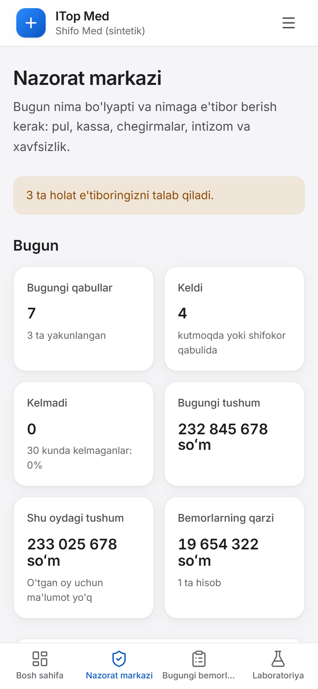
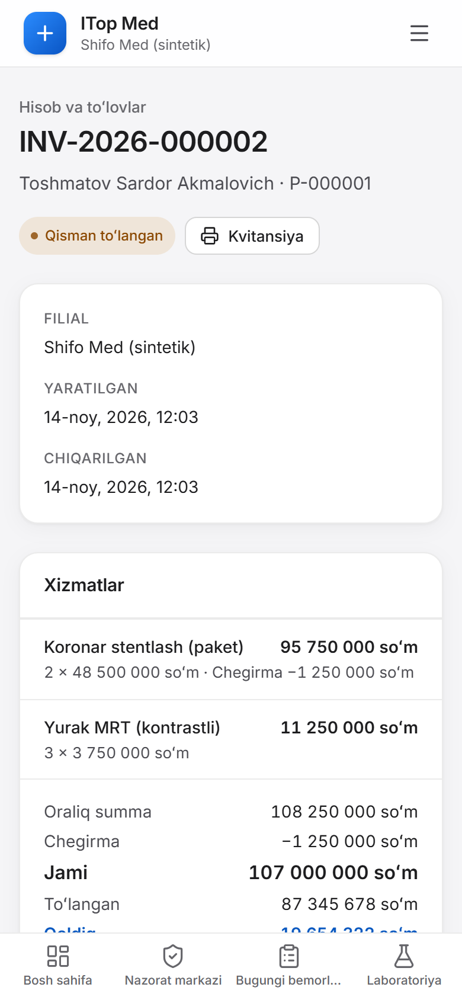
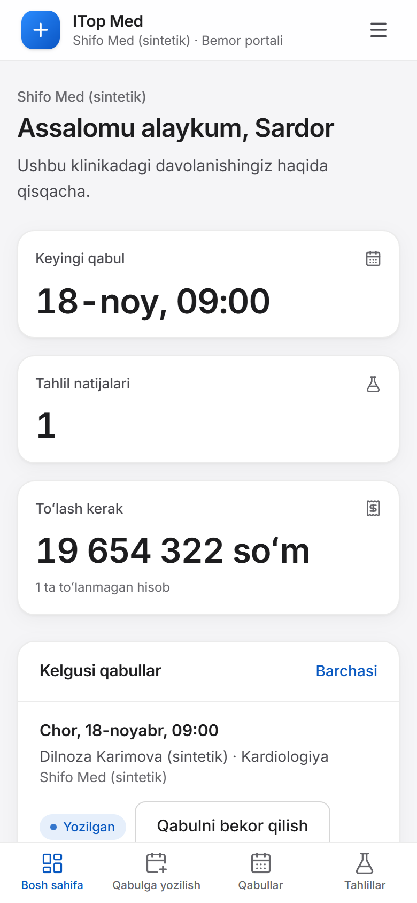
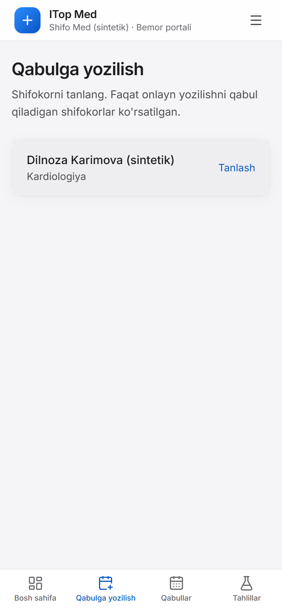
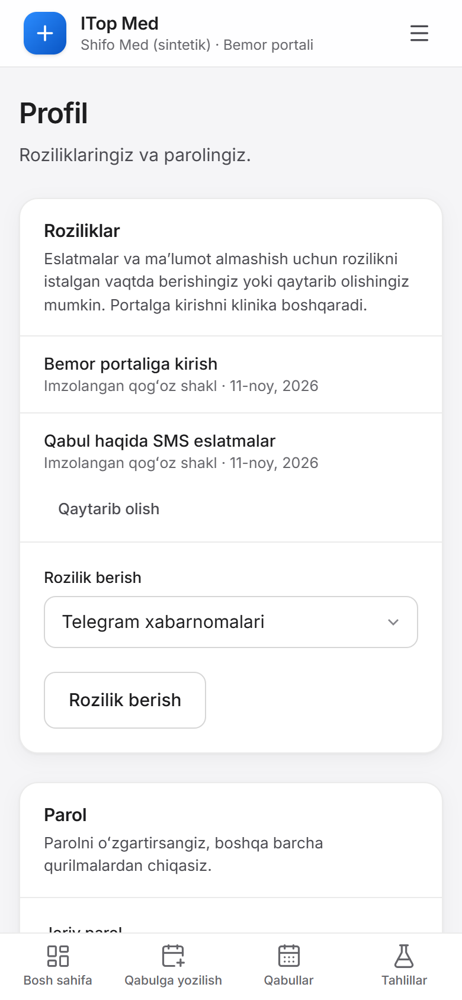

Eng kuchli argument
Egasi uchun Nazorat markazi
Klinika egasiga sotishda shu sahifani birinchi ko'rsating. Ega "pulim qayerda, kim nima qilyapti" degan savolga 10 soniyada javob oladi.

Bitta shifokorli kabinetdan ko'p tarmoqli shifoxonagacha: bemor, qabul, tibbiy karta, retsept, kassa, laboratoriya, ombor, hisobotlar va egasi uchun to'liq nazorat — o'zbek, rus va ingliz tillarida.
Ushbu hujjat: nima sotamiz, kimga, qanday ko'rsatamiz, e'tirozlarga qanday javob beramiz va nimani va'da qilmaymiz.
Versiya: 2026-yil noyabr. Barcha skrinshotlar sintetik (o'ylab topilgan) ma'lumotlar bilan. Ichki foydalanish uchun.
Klinikaning butun kundalik ishi — registraturadan kassagacha — bitta xavfsiz tizimda. Kompyuter, planshet va telefonda ishlaydi, ilova sifatida o'rnatiladi.
1 shifokor, ehtimol 1 administrator. Masalan, kichik kardiologiya kabineti: EKG, exokardiografiya, Xolter xizmatlari tayyor holda qo'shiladi. Ega o'zi registrator va kassir ham bo'la oladi.
Tish formulasi (FDI), har bir tish tarixi, stomatologik xizmatlar, materiallar ombori.
Tahlil buyurtmasi, namuna olish, natija, normadan chetga chiqish belgilari, ikki kishilik tasdiq, bemorga natijani portal orqali chiqarish.
Ko'p shifokor va bo'lim, bir nechta filial, kadrlar, ombor, rollar va huquqlar, filiallar bo'yicha cheklov.
Ega bitta sahifada pul, kassa, chegirmalar, intizom va xavfsizlikni ko'radi.
Klinikalar bir-biridan baza darajasida ajratilgan; har bir harakat o'zgartirib bo'lmaydigan jurnalga yoziladi.
4 til, telefonga moslangan, bir bosishda shablon, avtomatik to'ldiriladigan hujjatlar.
| Bugun klinikada (qog'oz, Excel, tarqoq dasturlar) | ITop Med bilan |
|---|---|
| Ega kassada qancha pul borligini, kim chegirma berganini bilmaydi | Nazorat markazi: har bir kassada hozir bo'lishi kerak bo'lgan naqd pul, smena kamomadlari, kim qancha chegirma va qaytarish qilgani |
| Kassir istalgancha chegirma beradi | Nazorat qoidalari: chegirma chegarasi (%) va majburiy sabab; ega o'zgartiradi, admin emas |
| Ikki bemor bir vaqtga yozilib qoladi | Baza darajasida ikki marta yozish mumkin emas; qabulni ko'chirishda ham tekshiriladi |
| Qog'oz karta yo'qoladi, yozuv o'qilmaydi | Elektron karta: shikoyat, ko'rik, MKB-10 tashxis, allergiya, qon bosimi; imzolangandan keyin o'zgartirib bo'lmaydi |
| Retsept va xulosa qo'lda yoziladi | Retsept va qabul xulosasi bir bosishda chop etiladi; allergiya bo'yicha ogohlantirish |
| Bemor qo'ng'iroq qilib yozilish uchun navbat kutadi | Bemor portalda o'zi yoziladi; eslatma email va Telegramga keladi |
| Natijalarni olish uchun bemor qayta keladi | Shifokor chiqargan natija bemor portalida ko'rinadi |
| Dorilar muddati o'tib ketadi | Ombor partiyalar va muddat bilan; kam qolgan, muddati o'tayotgan dorilar haqida ogohlantirish |
| Hisobot uchun kechqurun Excel to'ldiriladi | Moliya va ish hisobotlari tayyor, istalgan davr uchun |
Klinika egasiga sotishda shu sahifani birinchi ko'rsating. Ega "pulim qayerda, kim nima qilyapti" degan savolga 10 soniyada javob oladi.


Shikoyat, anamnez, ko'rik, xulosa, reja; MKB-10 tashxis; hayotiy ko'rsatkichlar; tahlil buyurtmasi; retsept; hujjatlar. Shablon bilan bo'limlar bir bosishda to'ladi.


Shablonlar bo'limida ega o'z hujjatlarini (xulosa, yo'llanma, ma'lumotnoma va boshqalar) va shifokor yozuvlari shablonlarini o'zi yozadi. Tizim bemor, shifokor, tashxis va retseptni o'zi qo'yadi. Bu dasturchisiz moslashuvchanlik — sotuvda kuchli dalil.



| Fakt | Mijozga qanday tushuntirish |
|---|---|
| Klinikalar baza darajasida ajratilgan | Bir klinika boshqasining ma'lumotini hech qanday yo'l bilan ko'ra olmaydi — bu dastur emas, ma'lumotlar bazasining o'zi taqiqlaydi. |
| Platforma xodimlari tibbiy kartani ko'ra olmaydi | Biz (ITop Med) bemorlaringiz kartasini ko'ra olmaymiz. Yordam kerak bo'lsa, faqat sizning ruxsatingiz bilan, vaqt cheklangan holda. |
| O'zgartirib bo'lmaydigan faoliyat jurnali | Kim, qachon, nima qilgani yoziladi va o'chirib bo'lmaydi; buzilganini tizim aniqlaydi. |
| Ikki bosqichli tekshiruv, tiklash kodlari | Rahbar hisoblar parol + telefondagi kod bilan himoyalangan. |
| Imzolangan yozuv o'zgarmaydi | Tibbiy yozuv imzolangach faqat qo'shimcha bilan to'ldiriladi — huquqiy jihatdan ishonchli. |
| Shifrlangan zaxira nusxa | Har kuni zaxira, tiklash sinovi bilan. |
| Rollar va huquqlar | Har bir xodim faqat o'ziga kerakli narsani ko'radi: kassir — kassani, shifokor — o'z bemorlarini. |
Og'riq: hamma ishni bir kishi qiladi, vaqt yetmaydi.
Taklif: sozlash yordamchisi 2 daqiqada kabinetni tayyorlaydi; mutaxassislik xizmatlari, jadval, retsept va xulosa tayyor; onlayn yozilish registratorni almashtiradi.
Og'riq: davolash tarixi va materiallar nazorati.
Taklif: tish formulasi va tarixi, xizmatlar narxi, ombor, chegirma nazorati.
Og'riq: natijalarni berish, xatolar.
Taklif: tahlil oqimi, normadan chetga chiqish belgilari, ikki kishilik tasdiq, portal orqali natija.
Og'riq: egasi nazoratni yo'qotgan, filiallar tarqoq.
Taklif: Nazorat markazi, chegirma qoidalari, filiallar bo'yicha huquqlar, kadrlar va litsenziyalar muddati.
| Mijoz aytadi | Javob |
|---|---|
| "Bizda internet yaxshi emas" | Tizim klinikaning o'z kompyuterida, mahalliy tarmoqda ishlay oladi. Telegram uchungina internet kerak. |
| "Ma'lumotlarimiz qayerda turadi?" | Mahalliy o'rnatishda — klinikaning o'z kompyuterida, shifrlangan zaxira nusxa bilan. Bulutli variantda — O'zbekistonda joylashtirish rejalashtirilgan (huquqiy talab). |
| "Xodimlarim kompyuterni yaxshi bilmaydi" | O'zbek tilida (lotin va kirill), sodda ekranlar, telefonda ham ishlaydi. Har bir rol faqat o'ziga kerakli bo'limlarni ko'radi. |
| "Bizga maxsus hujjat kerak" | Shablonlar bo'limida o'zingiz yaratasiz — dasturchi shart emas. |
| "Kassir o'g'irlasa-chi?" | Chegirma chegarasi, majburiy sabab, smena kamomadi va kim nima qilgani — barchasi Nazorat markazida. |
| "Payme/Click ulanadimi?" | To'lov turi hozir qo'lda belgilanadi. Onlayn integratsiya provayder bilan shartnomadan keyin — va'da qilmang, muddat aytmang. |
| "DMED bilan ishlaydimi?" | Hozircha yo'q: rasmiy spetsifikatsiya va ruxsat kerak. Yo'l xaritasida bor. |
Narxlar va tariflar rahbariyat bilan alohida kelishiladi — mijozga o'zingizdan narx aytmang. Aloqa: [telefon] · [email] · [manzil]